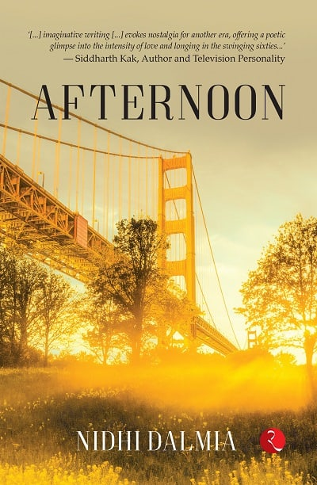
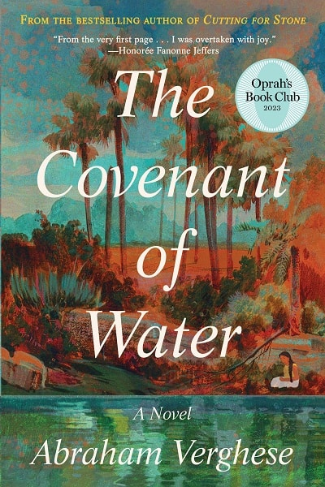

Afternoon by Nidhi Dalmia
Afternoon is a tale that unfolds in the late 1960s across the San Francisco Bay Area, New York, Kashmir, and Delhi, against the backdrop of significant cultural, student, sexual, and intellectual revolutions of that era.

The Covenant of Water by Abraham Verghese
Abraham Verghese, the acclaimed author of Cutting for Stone, has finally released his long-awaited novel, The Covenant of Water. The story spans from 1900 to 1977 and is set in Kerala, on the Malabar Coast of South India.
Sahela Re by Mrinal Pande
As Vidya, a distinguished music connoisseur, sets out to pen the history of Hindustani classical music, she unearths the vestiges of a vanishing epoch and culture. A time when vocalists personified ragas in their truest essence and benefactors were ardent adherents, not just simple disciples.